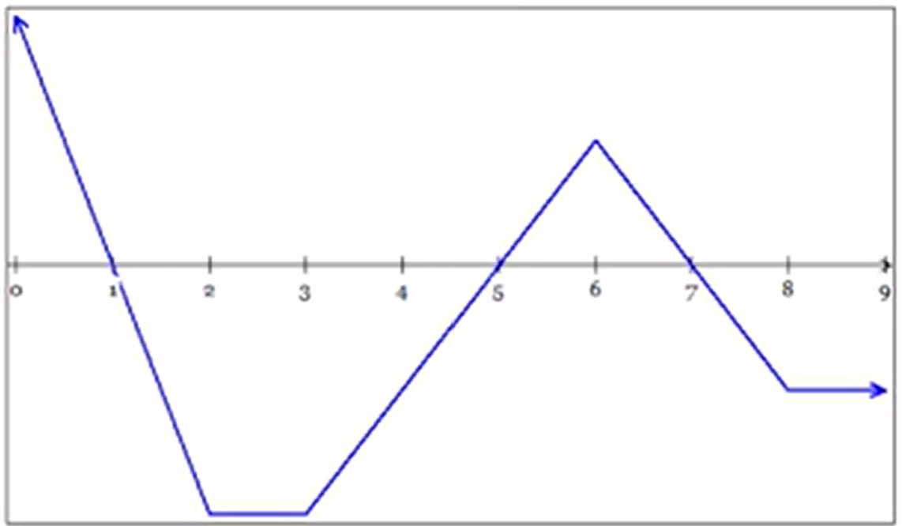

There is a relationship between position, velocity, and acceleration. Velocity is the derivative of position, and acceleration is the derivative of velocity. Likewise, velocity is the antiderivative of acceleration, and position is the antiderivative of velocity.
Distance—the total path ocvered by the object in motion between time \(t=a\) and \(t=b\).
Displacement—total change in the position of the object in motion between time \(t=a\) and \(t=b\).
Important: These are not always the same value.
Distance
$$d=\int_a^b|v(t)|dt$$
Displacement
$$s=\int_a^bv(t)dt$$
Throughout calculus you will see analytic, numeric, and graphic applications of rectilinear motion.
A particle is moving along a horizontal path. At time \(t\), its velocity is given by \(v(t)=6\sin(3t)\) for \(0\let\le\frac{\pi}{2}\).
\(\begin{align}a(t) &= v'(t) \\ &= 6\cos(3t)\cdot3 \\ &= 18\cos(3t)\end{align}\)
\(\begin{align}x(t) &= \int v(t)dt \\ &= \int6\sin(3t)dt \\ &= -2\cos(3t)+C\end{align}\)
\(\begin{align}s &= \int v(t)dt \\ &= \int_0^{\frac{\pi}{2}}6\sin(t)dt \\ &= 2\end{align}\)
\(\begin{align}d &= \int_a^b|v(t)|dt \\ &= \int_0^{\frac{\pi}{2}}|6\sin(t)|dt \\ &= 6\end{align}\)
The graph below shows the velocity \(v=f(t)\) of a particle moving on a coordinate line.
\((0,1)\cup(5,7)\)
\((1,5)\cup(7,9)\)
\((1,2)\cup(5,7)\cup(7,8)\)
\((0,1)\cup(3,5)\cup(6,7)\)
\((3,6)\)
\((0,2)\cup(6,8)\)
\((2,3)\cup(8,9)\)
\((2,3)\)
\(\fbox{The particle is never at rest for more than an instant.}\)
The data in the table below give selected values for the velocity, in meters/minute, of a particle moving along the \(x\)-axis. The velocity \(v\) is a differentiable function of time.

\(v(0)=-3\lt0\)
\(\fbox{The particle is moving left.}\)
\(\fbox{Yes.}\) Since the velocity is a differentiable function, it is continuous. The Intermediate Value Theorem says that, since \(v\) changes from negative to positive, it must go through \(0\). Thus, there is a point where \(v(t)=0\).
\(\begin{align}v'(10) &\approx \frac{v(12)-v(6)}{12-8} \\ &\approx \frac{5-7}{12-8} \\ &\approx -\frac{1}{2}\end{align}\)
\(\fbox{\(v'(10)\) is approximately \(-\frac{1}{2}\) m/s\(^2\), and the particle is slowing down.}\)
Apply the Mean Value Theorem (Rolle's Theorem).
\(\frac{v(12)-v(6)}{12-6}=0\)
Since we have a continuous function, the MVT says there must be a \(c\) between \(t=6\) and \(t=12\) such that \(v'(t)=a(c)=0\)